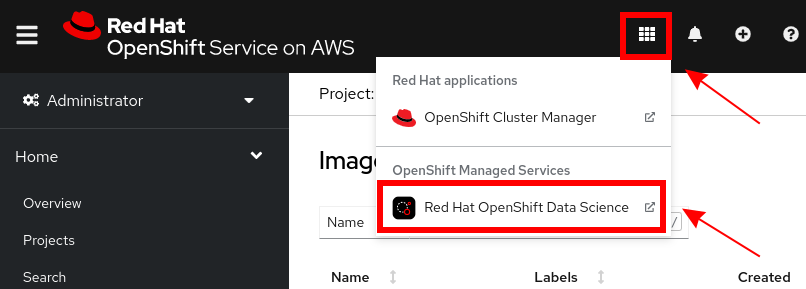

Validation
At this stage, and before you modify and/or customize your RHODS environment in any way, it’s a good time to confirm that your users can access it. These steps will walk you through some basics.
Get the RHODS URL
-
From the OpenShift Console, click on the application Switcher, and choose Red Hat OpenShift Data Science.
 -
This will open a new tab.

-
This URL is the main RHODS URL, and the only one that you need to share with your RHODS end-users.
5.1 Log in to RHODS
-
Click on the Log in with OpenShift button (from the screenshot above).
-
You should now see the full dashboard

-
You want to make sure that you are able to successfully spawn a notebook.
-
Click on the "Launch" icon.
-
On the next screen, select …
-
TODO Screenshot
-
choose image, size, and spawn